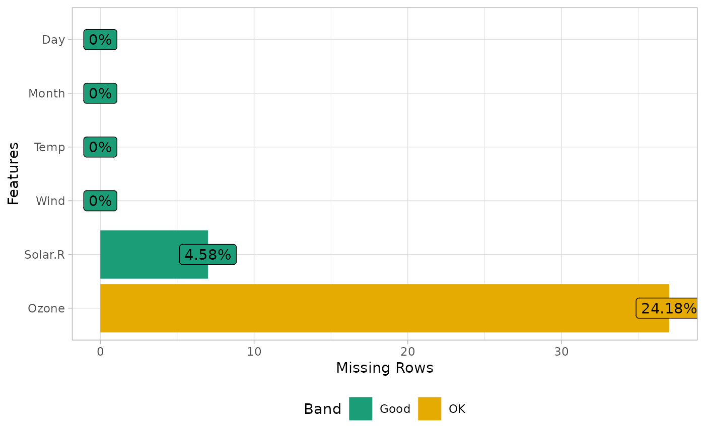
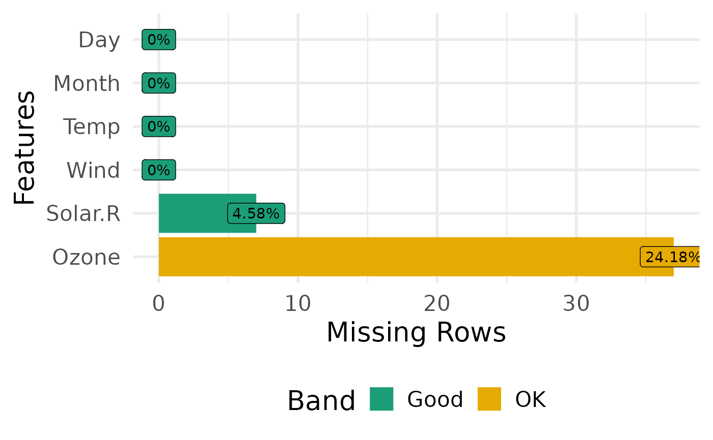
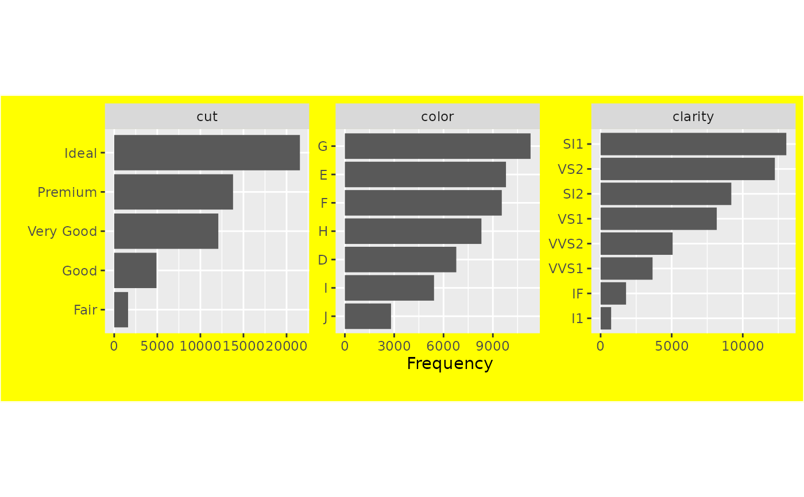

S3 method for plotting various DataExplorer objects
Arguments
- plot_obj
plot object
- title
plot title
- ggtheme
complete ggplot2 themes
- theme_config
a list of configurations to be passed to theme
- ...
other arguments to be passed
Details
To change default font family and size, you may pass base_size and base_family to ggtheme options, e.g., ggtheme = theme_gray(base_size = 15, base_family = "serif")
theme_config argument expects all inputs to be wrapped in a list object, e.g., to change the text color: theme_config = list("text" = element_text(color = "blue"))
Examples
library(ggplot2)
# Update theme of any plot objects
plot_missing(airquality, ggtheme = theme_light())

plot_missing(airquality, ggtheme = theme_minimal(base_size = 20))

# Customized theme components
plot_bar(
data = diamonds,
theme_config = list(
"plot.background" = element_rect(fill = "yellow"),
"aspect.ratio" = 1
)
)
